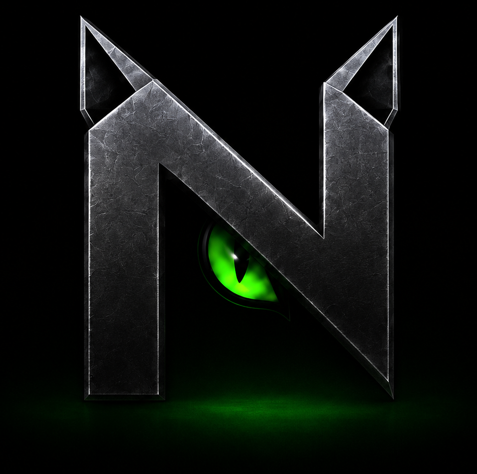

PLATAFORMA DE SEGURIDAD PARA COMUNIDADES
Control de acceso y cámaras con IA en una sola plataforma.
NOCTA conecta Resident, Guard, Admin y NoctaVision para autorizar accesos, validar ingresos, detectar eventos y coordinar respuestas con trazabilidad completa.
Acceso verificable
Cámaras IP
Eventos auditables

DOS SOLUCIONES COMERCIALES
NOCTA cubre acceso y monitoreo inteligente.
Primero controla quién puede entrar. Luego conecta las cámaras para entender lo que realmente ocurre y activar respuestas.
SOLUCIÓN SELECCIONADA
Control de acceso inteligente
Gestiona, valida y registra cada acceso desde una sola plataforma.
Invitaciones digitales
Validación por QR
Roles y permisos
Historial auditable
CONTROL DE ACCESO INTELIGENTE
Del permiso del residente al acceso registrado.
Invitaciones, QR, validación del guardia y auditoría administrativa en un flujo único y verificable.
DEMO INTERACTIVA
Flujo de acceso
Residente autoriza
Desde NOCTA Resident se crea la invitación para visitante, proveedor o familiar.
EstadoOperación registrada
- Comunidad verificada
- Vigencia del pase validada
- Evento enviado a Admin
NOCTAVISION
Cámaras que entienden lo que ocurre.
NoctaVision usa cámaras IP, modelos de IA y análisis de zonas para generar alertas con contexto visual y operativo.
Cámara: Entrada principal
Riesgo: Medio
PERSONA DETECTADA
APLICACIONES CONECTADAS
Cuatro módulos. Una sola operación.
Cada aplicación cumple un rol claro y comparte reglas, eventos, permisos y trazabilidad dentro del núcleo NOCTA.
NOCTA Resident
El residente crea invitaciones, administra pases y consulta actividad.
- Invitaciones
- Pases activos
- Revocaciones
- Avisos
NOCTA Guard
El equipo de seguridad valida accesos y atiende eventos.
- Escáner QR
- Turnos
- Bitácora
- Alertas
NOCTA Admin
La administración configura, supervisa y audita toda la solución.
- Comunidades
- Roles
- Dispositivos
- Reportes
NoctaVision
Las cámaras se convierten en sensores inteligentes de seguridad.
- Personas
- Vehículos
- Zonas
- Alertas
INTEGRACIÓN
NOCTA conecta lo autorizado con lo observado.
La diferencia está en unir la validación de accesos con los eventos visuales detectados por las cámaras.
NÚCLEO NOCTA
SEGURIDAD Y PRIVACIDAD
Diseñado para operación real.
Roles, permisos, dispositivos controlados, separación por comunidad y trazabilidad desde el origen.
Roles y permisos
Cada usuario opera según comunidad, unidad y nivel autorizado.
Eventos auditables
Accesos, alertas e incidentes quedan registrados.
Procesamiento controlado
Video e IA pueden desplegarse por fases y con reglas claras.
Multi-comunidad
Los datos y la operación se separan por comunidad.
PILOTO NOCTA
Implementación por fases para validar valor rápido.
Comienza con control de acceso y luego incorpora NoctaVision sobre cámaras IP, zonas críticas y reglas de alerta.
- Configurar comunidad y unidades
- Registrar usuarios y dispositivos
- Activar invitaciones y QR
- Inventariar cámaras IP
- Definir zonas y alertas
- Ejecutar piloto controlado